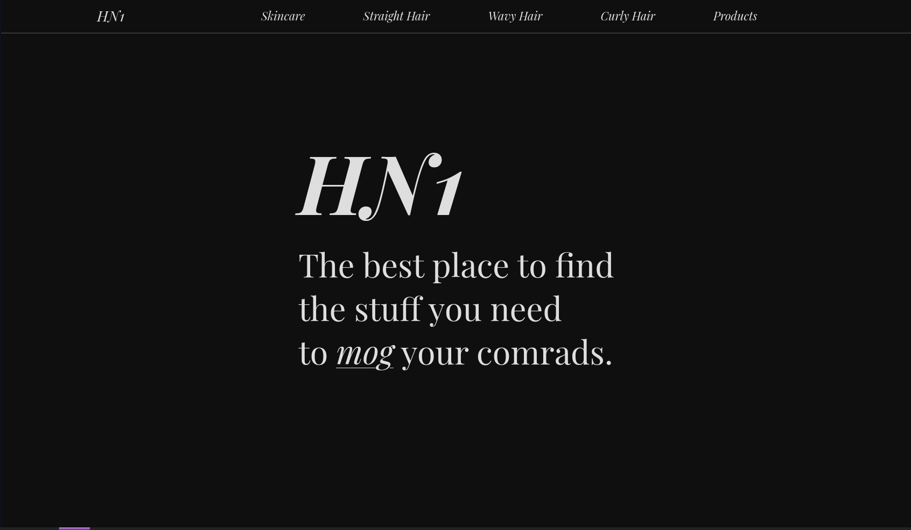
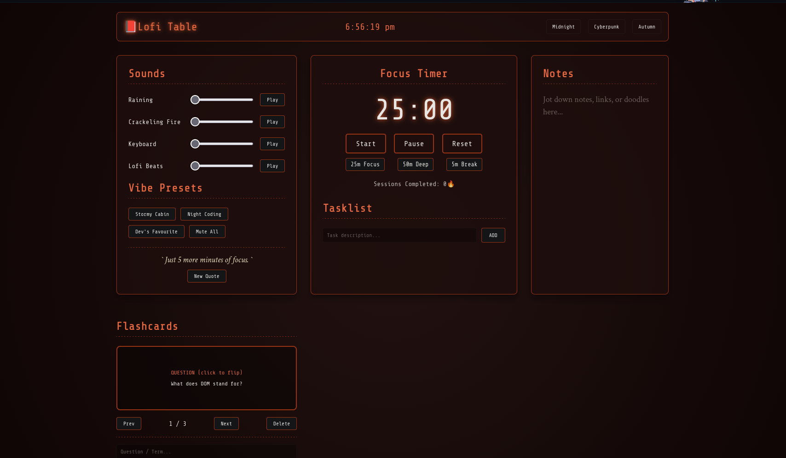

Hello,
I am Sasuke Syntax.
And I'm a Kool Guy.
Also known as:
 Senpai
Senpai
Kool Coder
OtakuBroOP
 About Me
About Me
I am a web developer. I build things for the web. Not because I have to, and not because someone is paying me—just because... why not?.
I'm full time jobless person who want to just try new things.
Anyways here my github for nerds.
My Projects
HN1
HN1 is a comprehensive digital hub tailored specifically for Indian consumers, dedicated to demystifying personal care through evidence-based skincare and haircare documentation. Recognizing the unique challenges posed by diverse Indian climates, melanin-rich skin types, and varied hair textures, this platform acts as an accessible, localized encyclopedia for topical health.

Haunted Manor
A spooky, text-based interactive choose-your-own-adventure game built entirely with vanilla web technologies. Step inside a mysterious abandoned house, avoid dangerous spirits, and figure out how to break the curse before you get trapped forever.Lofi Table
An all-in-one ambient study dashboard and productivity workspace built for the browser. Lofi Table combines customizable background sounds, focus tools, and quick study utilities into a single, distraction-free screen.